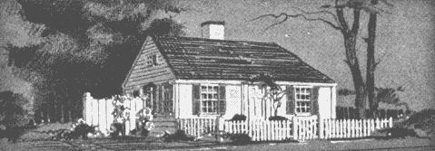
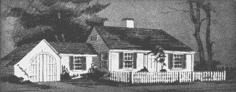
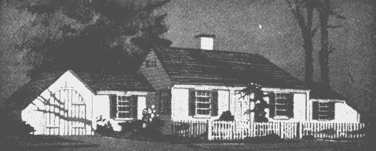

A Little House Can Grow Into A Homestead
The transformation of a little house into one large homestead house from the Have-More Plan.
By the Mother Earth News editors
March/April 1970
|
 1. Here's a pay-as-you-go house that starts small and can grow step-by step. In fact, maybe you can pay for additions out of savings made by raising your family's food. |
 2. Added to the main section is a nice garage and root cellar... garage should be dcep enough to provide space for a workbench in rear and garden tools. |
 3. A dining room, or better yet, a ""Harvest Kitchen;"" has been added. The house now becomes a real homestead. |
|
 4. Finally, another bedroom (at right) is built. The so-called Cape Cod style lends itself particularly well to growth. |
|
|